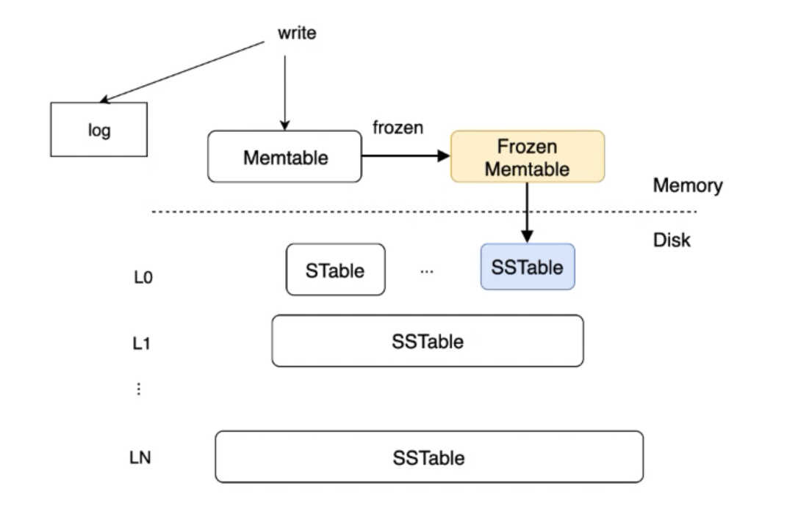
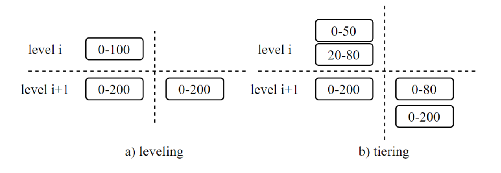

Ch05-数据库理论 之 B+ Tree VS LSM
November 3, 2022
1. B+ Tree #

B+ Tree 是平衡搜索树的一种，是为了磁盘搜索而生的。它一般将磁盘块大小作为叶子节点的大小，方便数据读取，插入，原地更新等。B+ Tree 的查询/插入/删除 的时间复杂度都是 O(LogN)
2. LSM Tree #

LSM Tree 的核心思想是将离散的随机读写请求转换成批量的顺序读写请求。它采用的是 Append Only 方式对数据插入，更新（无法原地更新）。查询顺序为如下步骤。
Memtable -> Frozen Memtable -> L0 -> L1 -> ··· -> LN
3. LSM Tree Compaction #
Compaction 实际是数据的重新整合，实质是多路归并排序，主要作用是减少 SSTable 的数量，提升查询性能。但是它资源耗费比较高（IO：需要大量的读取与写入操作；CPU：涉及 checksum 计算，rowkey 比较；性能抖动）
3.1 Amplification #
| 名词 | 英文 | 说明 |
|---|---|---|
| 读放大 | Read Amplification | 本次扫描的数据量/实际返回的数据量 |
| 写放大 | Write Amplification | 磁盘写入的数据量/实际的数据量 |
| 空间放大 | Space Amplification | 存储的数据量/实际的数据量 |
3.2 Compaction Strategy #
不同的 Compaction 策略是对写放大、空间放大、读放大的一个权衡。
| * | SSTable 设计 | Compaction | 权衡 | 代表数据库 |
|---|---|---|---|---|
| Class-Leveled | 每个 Level 包含一个 SSTable | L(n) + L(n+1) = new L(n+1) ，将 L(n) 的 SSTable 与已有的 L(n+1) 融合 | 写放大较为严重 | Level DB 的 Major Compaction |
| Size-Tiered | 每个 Level 包含包含多个 SSTable，相同 Level 的 SSTable 的 rowkey range 存在交集 | several L(n) = new L(n+1) 将 L(n) 的 SSTable 融合后移动到 L(n+1) | 读放大较为严重 | Cassandra 的 Size Tiered Compaction，RocksDB 的 Universal Compaction |
| Tiered & Leveled | 层级较小的使用 Size-Tiered；层级较高的使用 Class-Leveled | RocksDB 的 Leveled Compaction，OceanBase |
FIFO Compaction: LSM-Tree 只有一个 Level，SSTable 以时间序排列，每次淘汰生成时间最早的 SSTable。适合时序数据库这类有时间属性和时间效用的数据。不过这种 Compaction 可能会丢失数据

3.3 墓碑问题 #
随着 Compaction 的执行，相同 RowKey 所有行会从新往旧的 Compact，以此减少空间放大。
| 现象 | 说明 |
|---|---|
| INSERT + UPDATE -> INSERT | 假如 L1 存在 INSERT <k, v1>，L0 存在 UPDATE <k,v2>，那么 Compaction 完成后可能会形成 INSERT<k, v2> |
| INSERT/UPDATE + DELETE -> DELETE | 每一层都存在对某个 Key 的 INSERT/UPDATE 操作，当出现一个 DELETE 操作的时候，必须要每一层都完成 Compaction 操作才能将该 Key 彻底从数据库删除 |